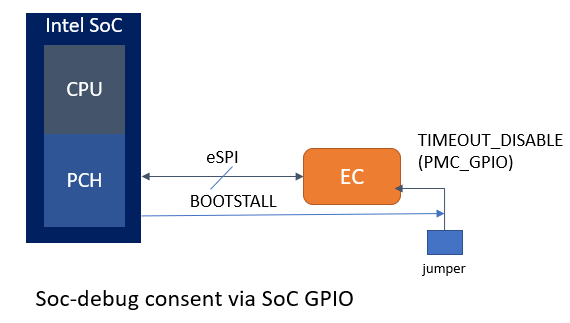
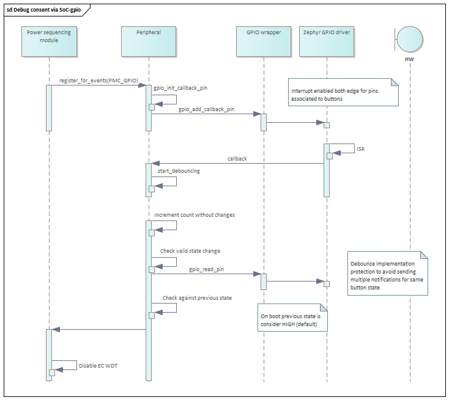
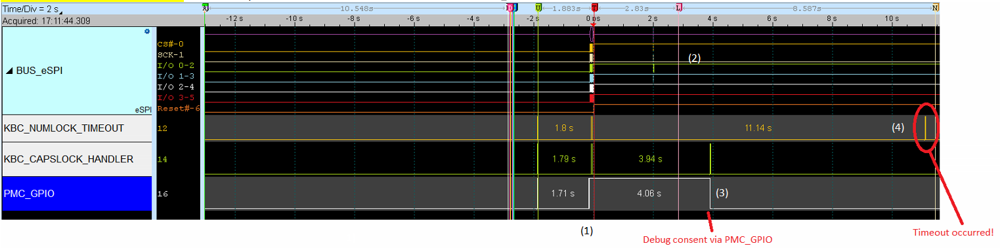
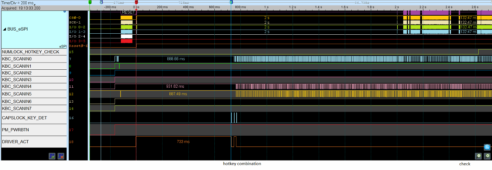

EC support for Intel SoC Debug¶
Overview¶
This application note describes the requirements and implementation details for EC FW to avoid disruption Intel SoC debug tools. It covers an overview of the current constraint, EC role in SoC debug flows and recommended implementation as well as a set of optional features to provide flexibility.
SoC debug while EC timeout is enabled¶
As indicated in Intel EC FW reference documentation, during system transitions (boot, resume, hibernate, shutdown) EC will check if certain conditions are met, if any of these conditions is not fulfilled within a predetermined time interval the power sequencing will stop and timeout.
Whenever Intel/OEM/ODMs connect a debug tool and change the boot flow (and intentionally stop the power sequencing in early stages), EC (WDT) reset the platform.
Connecting a debug tool/cable
Loading tokens or authenticating to enable Intel/OEM debug
Collecting and extracting emergency trace and crash log
OEM/ODM manufacturing floor bone-pile triage, RMA triage
IA run-control
Internally, Intel RVP has EC WDT disable jumper which allows to prevent this disruption; however, this is not appropriate for production or closed chassis systems.

EC SoC-debug awareness¶
EC will become SoC-debug aware when debug Consent is communicated, when debug is enabled, EC WDT must be disabled to allow debug tool to perturb the normal operation at any time, in any power-state.
SoC-debug consent via SoC bootstall GPIO¶
Intel recommends communicating the debug consent/intention physically to EC via SoC bootstall pin, so the debug tool perform this action. This is same pin where PMC_GPIO jumper is connected in Intel RVPs

At difference than existing implementation which samples the PMC_GPIO pin only once at boot, in this case EC power sequencing module will register for notifications so whenever there is a change in SoC bootstall, EC will re-evaluate if EC WDT has to be disabled or not.

Considerations¶
Special attention should be paid to any timeout loop to avoid race conditions and ensure PMC_GPIO update it is always processed.

Optional extensions¶
In addition, to disable EC WDT mechanism, a debug consent flag could be saved in non-volatile memory, so the EC WDT remains disable across power cycles.
If this is not implemented, if EC timeout mechanism is disabled or not will follow if PMC_GPIO (Timeout disable HW strap state) on next power cycle.
If this is implemented in any extension of existing code, flag should be cleared whenever PMC_GPIO becomes HIGH for predetermined amount of time.
Whenever available SoC bootstall GPIO is the preferred method to disable EC WDT, but if that’s not available below are list of alternatives.
SoC bootstall |
EC WDT jumper |
|
Debug consent communication |
|---|---|---|---|
Yes |
x |
x |
SoC-GPIO |
No |
Yes |
x |
PMC-GPIO |
No |
No |
Yes |
Hotkey sequence prior to power up |
SoC-debug consent via Keyboard matrix hotkey¶
For closed-chassis systems without SoC GPIO bootstall support that have matrix keyboard attached, EC ODM can define a hotkey that when pressed will disable the EC WDT.
The Intel Zephyr-based EC FW reference code for TGL + MECC has this feature enabled by default.
Refer to prj_mec1501modular_assy6885.conf
CONFIG_EARLY_KEY_SEQUENCE_DETECTION=y
CONFIG_POWER_SEQUENCE_DISABLE_TIMEOUT_HOTKEY=y
CONFIG_EARLY_KEYSEQ_CUSTOM0=33
First item enables keyboard scan matrix driver hot key sequence as soon as system is powered up and allows other EC modules to query about any occurrence. Second item disables the EC WDT whenever then predefined hotkey is detected. Finally, last item indicate which key will be used. i.e., ALT + SHIFT + ‘D’
#ifdef CONFIG_POWER_SEQUENCE_DISABLE_TIMEOUT_HOTKEY
/* Check if key already detected */
if (!pwreq_timeout_disabled &&
kbs_keyseq_boot_detect(KEYSEQ_TIMEOUT)) {
pwrseq_timeout_disabled = true;
LOG_WRN("EC timeout disabled via kbs");
}
#endif

Considerations¶
Early hotkey detection upon power up a system is only constrained by 2 factors:
1) Early EC FW configuration Zephyr Keyscan driver will load early on and will enable, nevertheless EC FW shall enable driver callback should be registered within the driver. Hence reference code performs this operation when EC FW threads are created.

2) Pull-up for keyboard matrix input lines. If there are external pull-ups at the board design for keyboard matrix inputs, hotkey combination can be pressed before system gets powered.
Board designs where power consumption is a constraint, keyboard matrix input lines enable internal pull-ups into the EC SoC instead. In such case, hotkey press should be performed after power up the system and within the first EC timeout window. (which is configured as 6 seconds in reference code)
Note
This is only applicable for system designs where boot to S0 as soon system gets powered. (system where power button press is not required)